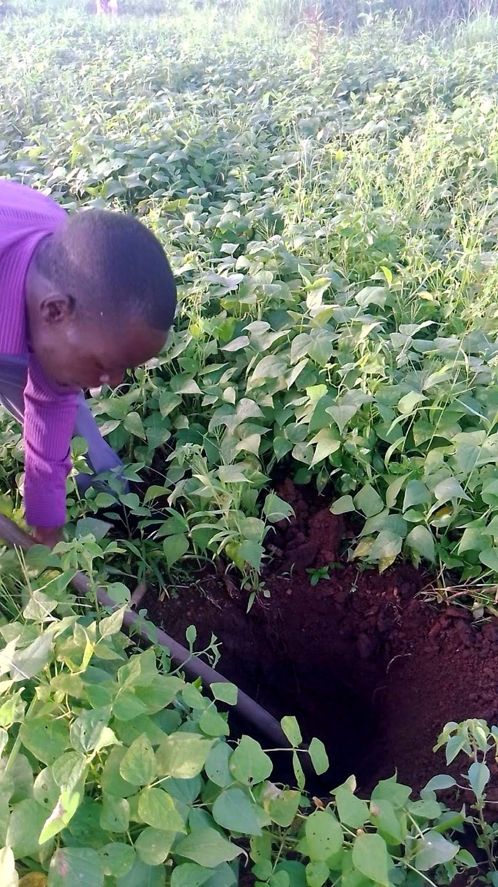
01 / ADVISORY
Agribusiness Consultancy
Practical guidance for stronger farm and agribusiness decisions.
Explore →What we do

Practical guidance for stronger farm and agribusiness decisions.
Explore →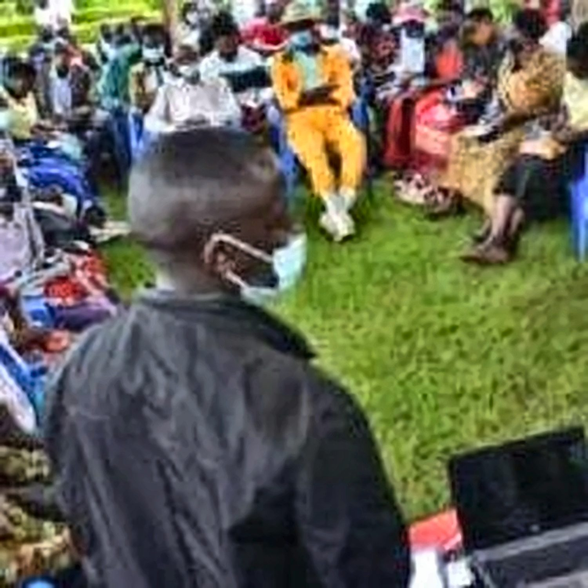
Build skills, knowledge and confidence for better agricultural outcomes.
Explore →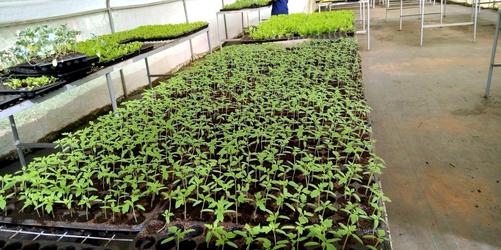
Support for practical, efficient and productive farm environments.
Explore →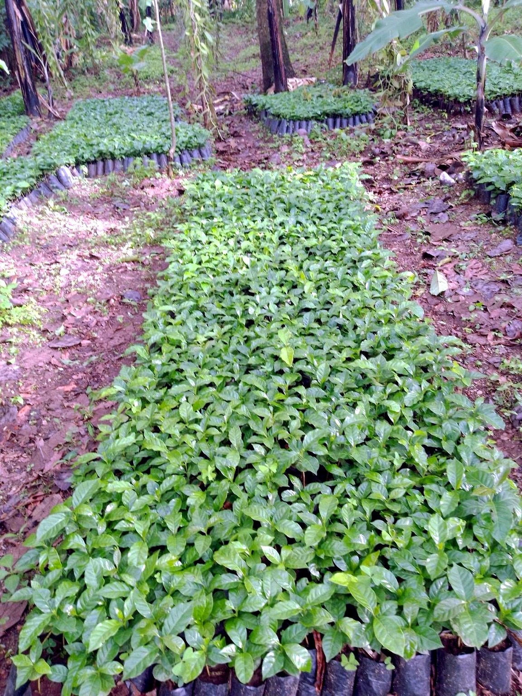
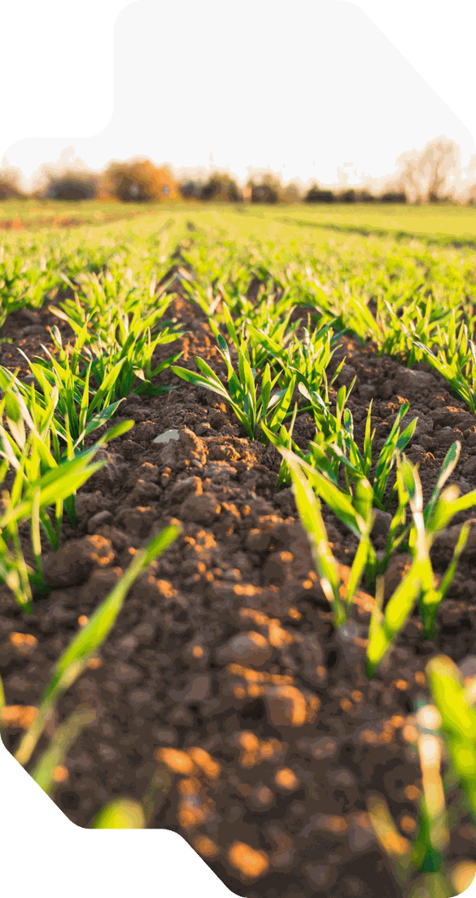
Our approach
We bring together agribusiness, agronomy, livestock, engineering, market and planning capabilities to address practical needs across agricultural value chains.
In practice
Practical agricultural work shaped by local conditions, from production and field support to post-harvest handling.
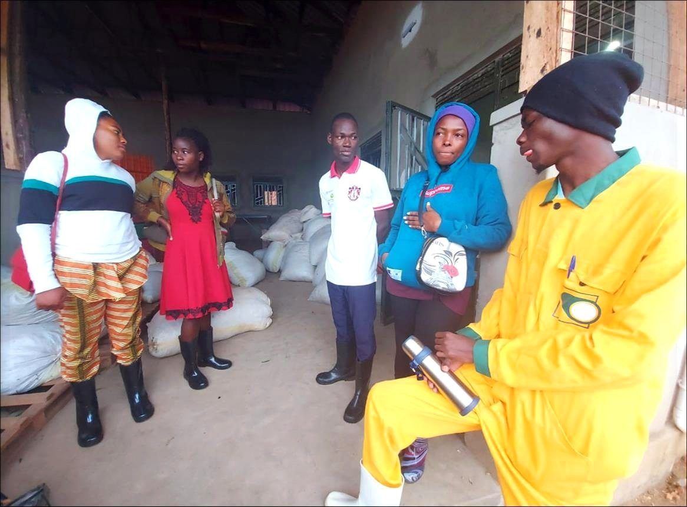
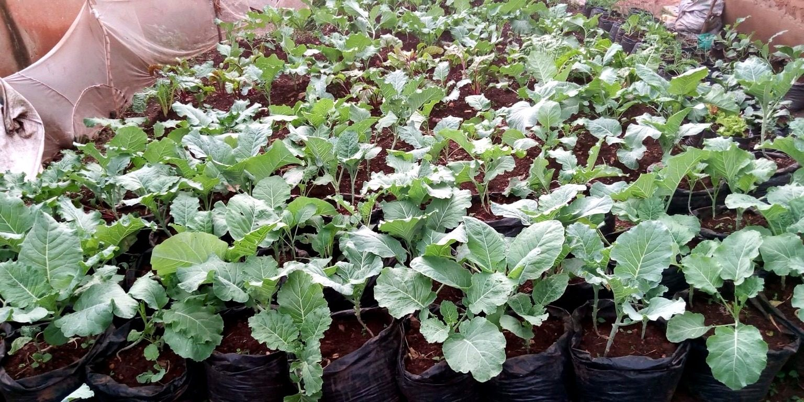
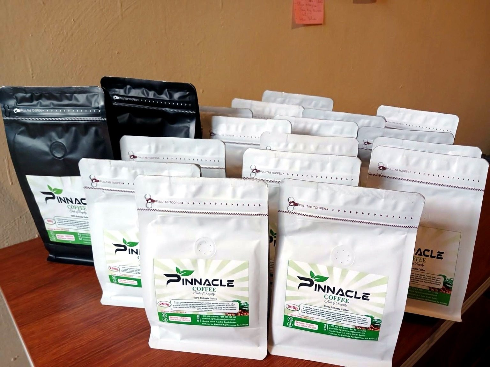
Agriculture in focus
A closer look at crops, production systems and the people behind productive agricultural enterprises.
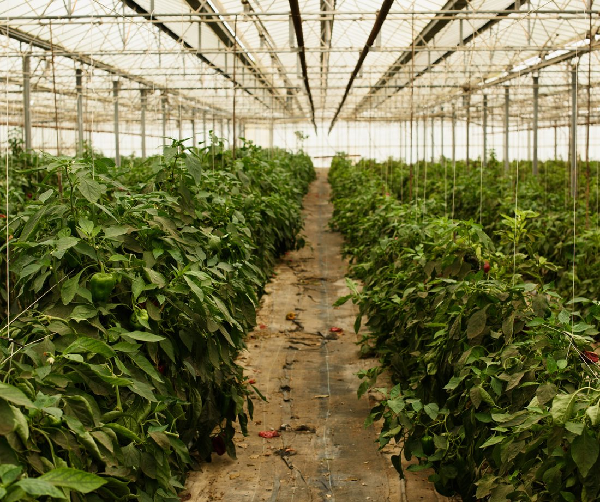
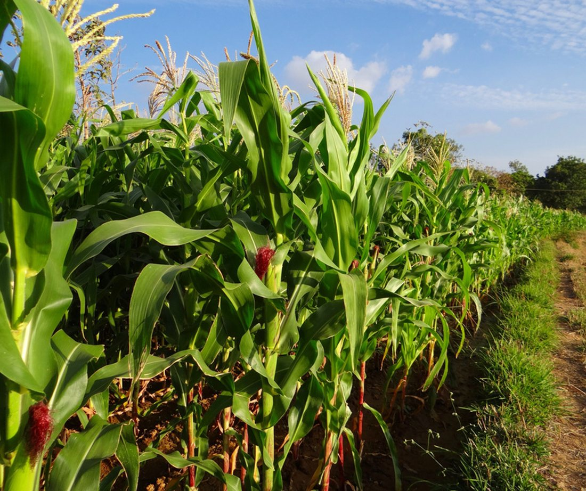
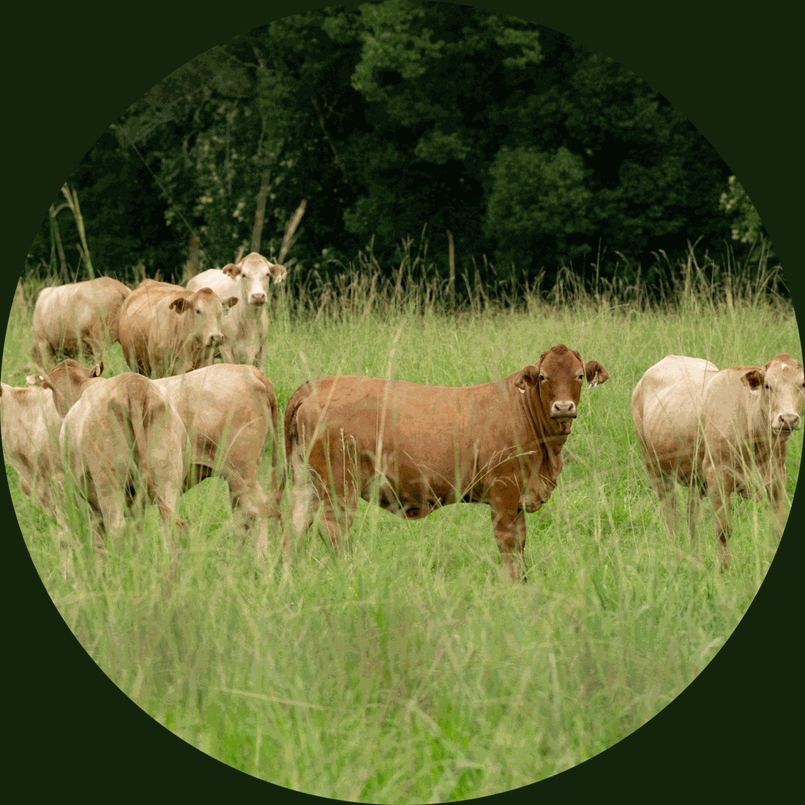
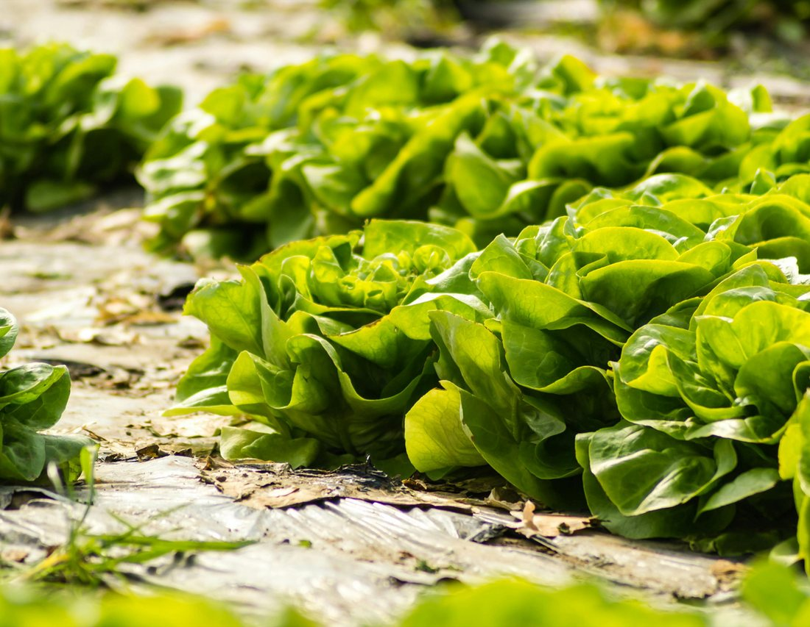
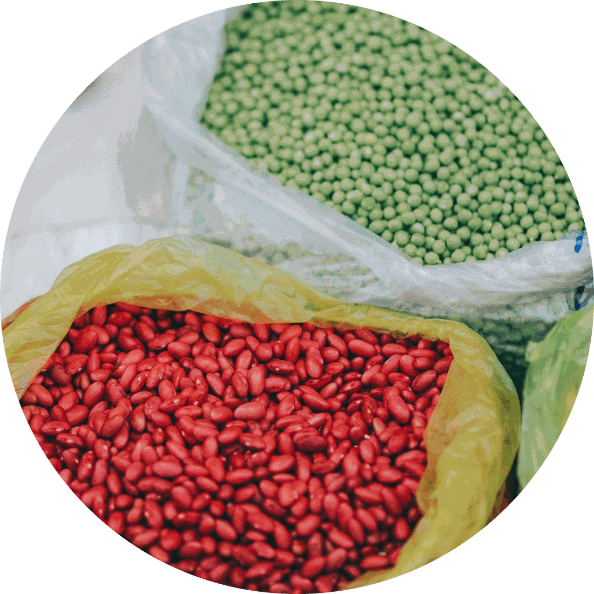
Our values
Promoting efficient and technology-enabled agricultural practices.
Building responsible practices for people, farms and ecosystems.
High standards for service quality, safety and reliability.
Long-term, mutually beneficial relationships across the value chain.
Let's grow together
Practical agribusiness support from farm setup to market. Reach out and let's start a conversation about your farm or agribusiness idea.